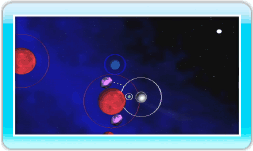

11 |
Come superare tutti i livelli |
 |
|
Una volta apprese le nozioni fondamentali di Orbient, cerca di raggiungere i seguenti obiettivi prima di completare un livello. 
● Assorbi le stelle blu Assorbi le stelle blu per aumentare le dimensioni della tua stella. Quando la tua stella sarà cresciuta abbastanza, le stelle rosse che in precedenza non potevi assorbire diventeranno blu. Se hai dei dubbi sulla direzione da prendere, consulta la mappa del livello premendo

● Fai di una stella grigia un tuo satellite Avvicinandoti con attenzione a una stella grigia la renderai un tuo satellite. Se completi un livello dopo aver ottenuto dei satelliti, otterrai punti bonus: più satelliti possiederà la tua stella e più alto sarà il bonus. Anche il numero di tentativi a tua disposizione aumenterà, perciò cerca di completare un livello con il maggior numero di satelliti possibile. 
● Fare della stella finale un satellite Quando le dimensioni della tua stella raggiungono quelle della stella finale, questa s’illumina di giallo. Per completare il livello, devi renderla un tuo satellite utilizzando lo stesso metodo descritto per le stelle grigie. Nota: non puoi assorbire una stella finale e una collisione con essa farà esplodere la tua stella. ● Lo schermo dei risultati I punti ottenuti in un livello vengono calcolati in base ai parametri indicati di seguito. Se completi un livello avendo anche una luna come satellite, un’icona a forma di luna apparirà a destra dei punti indicati dalla voce BONUS.
|
 .
. |
 |
 |